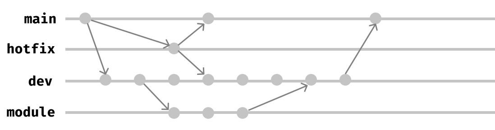

This project consists in the design and development of interactive dashboards for the analysis of buildings energy data. In particular, we propose to interact with the data in a deeper way by providing different level of data manipulation, from simple pre-processing tasks to advanced methods (e.g., clustering).
The user can modify the models hyper-parameters directly from the UI, giving a great flexibility in the exploration.
Getting Started
The eDASH can be accessed in many different way depending on the user. We provide an online version for base users who can access the service with no software requirements, a local access by installing the dashboard as an R package for intermediate and finally a version control installation for developer and contributors.
shinyapps.io (Online)
From this link it is possible to access and use the dashboard online without having R or Rstudio installed on your computer. Thanks to shinyapps.io the whole application is hosted online and accessible without any requirements other than an internet connection.
:exclamation-triangle: Warning: Since the online hosting is performed through the free account, a limit of 25 active hours is set from the server. If this limit is exceded the app will not be available untill the next month cycle. Therefore, we suggest to exploit the dashboard functionalities by cloning the repository on your local machines as explained in the following.
AWS (Online)
From this link it is possible to access and use the dashboard online without having R or Rstudio installed on your computer. Thanks to Amazon Web Services the whole application is hosted on a virtual machine (EC2) accessible without any requirements other than an internet connection.
Package Version (Local)
This kind of installation is suitable for those who have the permission to download the code and want to run the dashboard locally as if it was a R package. Since the code is hosted on a private GitHub repository the user must have the permissions
Install the development version from GitHub with:
# install.packages("devtools")
devtools::install_github("https://github.com/baeda-polito/dashboard-student")Then you can run the application by simply typing in the console:
Version Control (Local)
This kind of installation is suitable for developers who have the permission access the private GitHub repository and download the full code. The process described allows you to get the whole GitHub repository on your computer.
Be sure to have the latest version of RStudio installed, then follow these steps:
- In RStudio, start a new Project by following this path “File > New Project > Version Control > Git”;
- In “Repository URL”, paste this URL
https://github.com/baeda-polito/dashboard-student; - Accept the default “Project directory name” which coincides with the GitHub repo name
dashboard-student; - Chose a local path to save the repository on your computer;
- Click “Create Project”.
Now you have cloned the repository and you can contribute!
Contributing
Any contributions you make are greatly appreciated. If you want to propose a feature or report a bug please open a new issue. If you want to contribute to the code, follow these steps:
- Create your Feature Branch, called for example
MYBRANCH(git checkout -b feature/MYBRANCH); - Commit your Changes (
git commit -m 'Add some AmazingFeature'); - Push to the Branch (
git push origin feature/MYBRANCH); - Open a Pull Request.
In this project we follow a defined convection for branch names, so please follow it. The main branch is called main and is the online branch. If you want to contribute on one module for example the clustering module, please call the branch.

Acknowledgements
You’ll still need to render README.Rmd regularly, to keep README.md up-to-date. devtools::build_readme() is handy for this. You could also use GitHub Actions to re-render README.Rmd every time you push. An example workflow can be found here: https://github.com/r-lib/actions/tree/master/examples.
ssh -i "baeda-demo1.pem" ubuntu@ec2-18-222-204-38.us-east-2.compute.amazonaws.com